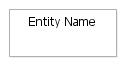
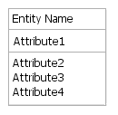
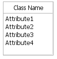
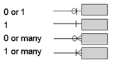
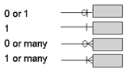
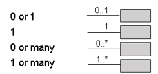
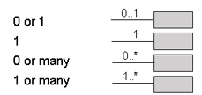

| Artifact: Data Model |
 |
|
It serves the following purposes:
|
| Fulfilled Slots | ||
|---|---|---|
| Roles | Responsible: | Modified By: |
| Tasks | Input To:
| Output From: |
| Main Description | The figure below illustrates that a data model has an association to an overall logical data design that is obtained via the progression of the data model through different states – entity relationship model, conceptual data model, and logical data model.
Though the above figure diagrammatically shows development of a logical data design as a cascading serious of steps, the delineation between these steps is not that clear-cut. In reality, a logical data design expands, contracts, and interplays across these data model states throughout the development. Entity Relationship Model (ERM) An ERM level of a logical data design presents a high-level view of the significant information of interest to the business and establishes the foundation from which data design will progress. It depicts the significant business notions and concepts associated with an application as entities, potentially some elaboration as to the important business characteristics of those notions/concepts via the attributes listed for each entity, and the relationship between these business notions/concepts in the form or data relationships. Conceptual Data Model (CDM) A CDM level of a logical data design depicts a high level statement of the main entities needed to support an application, along with known (but not necessarily complete) listings of the attributes associated with the entities in the data design. It is an expansion of the information conveyed in the ERM level of a logical data model as usually discovered via top-down analysis. Development of a logical data design to a CDM level is closely integrated with the development of an application's process models. Logical Data Model (LDM)
A LDM is an implementation-independent data model and generally represents the final deliverable in the logical data
design efforts of a project. Using the CDM as input, it reflects the dynamic nature of the entities in the
logical data design and optimizes the entities in the data model toward ensuring each strongly and uniquely represents
a business notion. |
|---|---|
| Brief Outline | This artifact typically includes the following constructs:
|
| Notation | There are three commonly used logical data modeling notations. While they all reflect common data modeling concepts, each has its own graphical syntax briefly described below. For a more detailed description of these notations, see the references. Information Engineering (IE)


Integration Definition for Information Modeling (IDEF1X)
The Unified Modeling Language

|
| Selected Representation | Rational Data Architect is used for developing the logical data model. Information Engineering (IE) notation is its selected notation. |

 



 

| Examples |
|---|
|
| Impact of not having | Without this artifact, stored business information is captured solely by a functional model which describes where data stores are created and placed to serve the data needs of the functional processes. There is no unified view of all data, and data normalization is not possible. The physical database design can only be developed from a functional model, leaving data ambiguities and redundancies resulting from the lack of normalization. This leads to an inefficient physical database design which could be missing critical data or lead to inadvertent data duplication and inconsistency. |
|---|---|
| Reasons for not needing | Some reasons for not needing:
|
| Representation Options | Informal data models can be created using whiteboards or drawing tools. However, if the model needs to be maintained, a data modeling tool is advised. When selecting which data modeling notation should be used, consider the following pros and cons:
|
| Checklists | |
|---|---|
| Guidelines | |
| Supporting Materials | |
| Estimation Considerations |
Licensed Materials - Property of IBM |